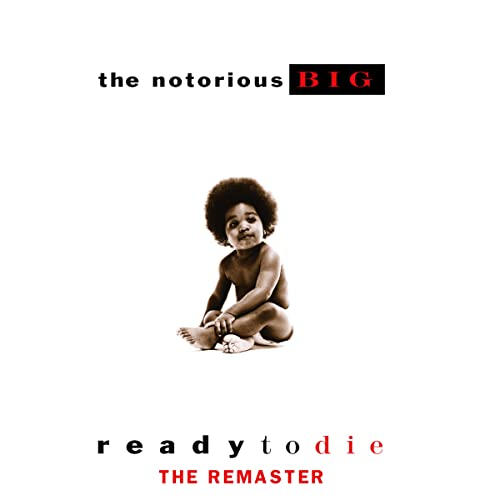
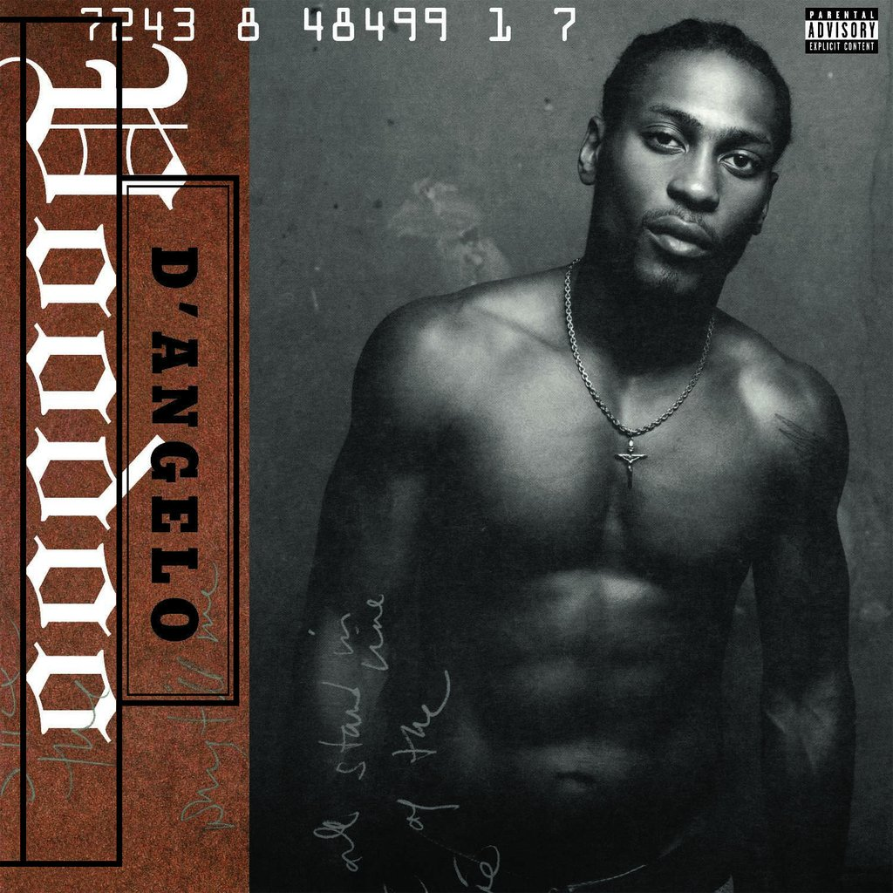

Heavy Rotation
-
Thousand Knives
"Thousand Knives" is a staple of Sakamoto's repertoire, being rearranged for his synth-pop band Yellow Magic Orchestra in 1980 for their BGM album; as a classical trio for 8/21/1996; and for a piano duet on /05. Numerous other arrangements have been performed live over the years, both by YMO and by Sakamoto himself; these performances contain one of the earliest uses of the Roland TR-808 drum machine. "Plastic Bamboo" was also a staple of early YMO shows, though the only recording appears on their live album Live at Kinokuniya Hall 1978 released in 1994, sixteen years after being recorded. "The End of Asia" would also regularly appear during YMO shows, with a drastically different studio version included on their X∞Multiplies album.
-
Blonde
Blonde (alternatively titled blond) is the second[a] studio album by American singer Frank Ocean. It was released on August 20, 2016, as a timed exclusive on the iTunes Store and Apple Music, and followed the August 19 release of Ocean's video album Endless. In 2013, Ocean confirmed that his follow up to Channel Orange would be another concept album. Initially known as Boys Don't Cry and teased for a July 2015 release, the album suffered several delays and was the subject of widespread media anticipation leading up to its release. Its physical release was accompanied by a magazine entitled Boys Don't Cry.
-
Untrue

Blonde (alternatively titled blond) is the second[a] studio album by American singer Frank Ocean. It was released on August 20, 2016, as a timed exclusive on the iTunes Store and Apple Music, and followed the August 19 release of Ocean's video album Endless. In 2013, Ocean confirmed that his follow up to Channel Orange would be another concept album. Initially known as Boys Don't Cry and teased for a July 2015 release, the album suffered several delays and was the subject of widespread media anticipation leading up to its release. Its physical release was accompanied by a magazine entitled Boys Don't Cry.
-
Ready To Die
Ready to Die is the debut studio album by American rapper The Notorious B.I.G., released on September 13, 1994, by Bad Boy Records and Arista Records. The album features productions by Bad Boy founder Sean "Puffy" Combs, Easy Mo Bee, Chucky Thompson, DJ Premier, and Lord Finesse, among others. It was recorded from 1993 to 1994 at The Hit Factory and D&D Studios in New York City. The partly autobiographical album tells the story of the rapper's experiences as a young criminal, and was the only studio album released during his lifetime, as he was murdered sixteen days before the release of his second album Life After Death in 1997.
-
Voodoo
D'Angelo recorded the album during 1998 and 1999 at Electric Lady Studios in New York City, with an extensive line-up of musicians associated with the Soulquarians musical collective. Produced primarily by the singer, Voodoo features a loose, groove-based funk sound and serves as a departure from the more conventional song structure of his debut album, Brown Sugar (1995). Its lyrics explore themes of spirituality, love, sexuality, maturation, and fatherhood.